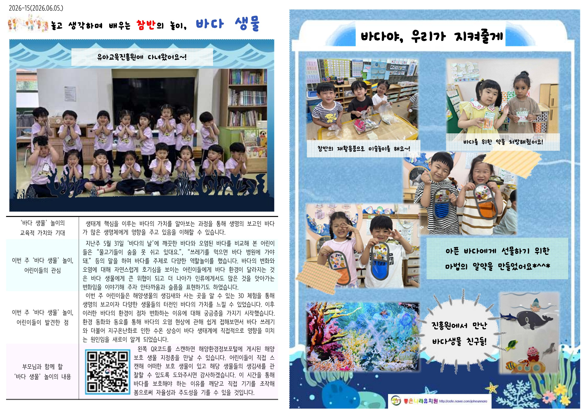
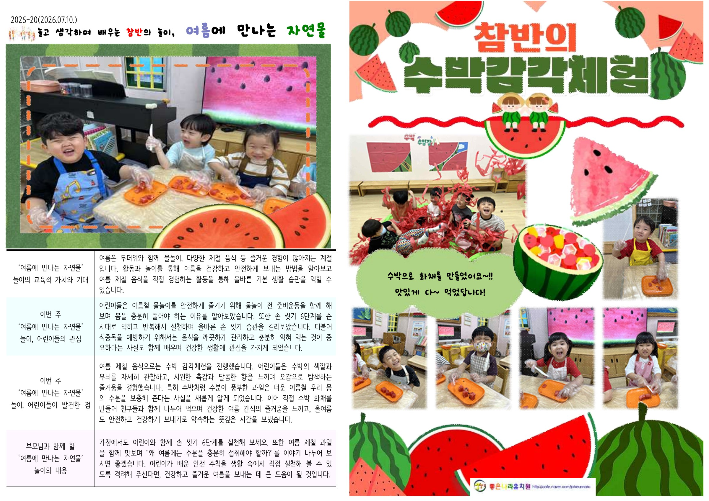
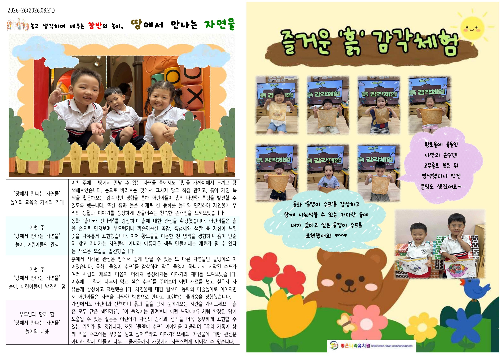
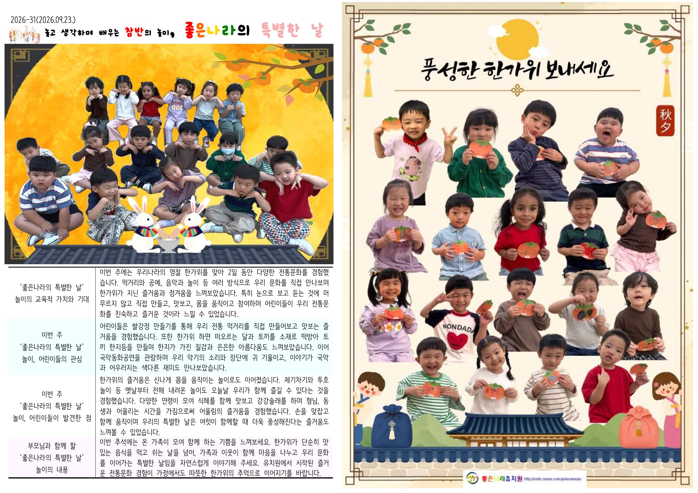
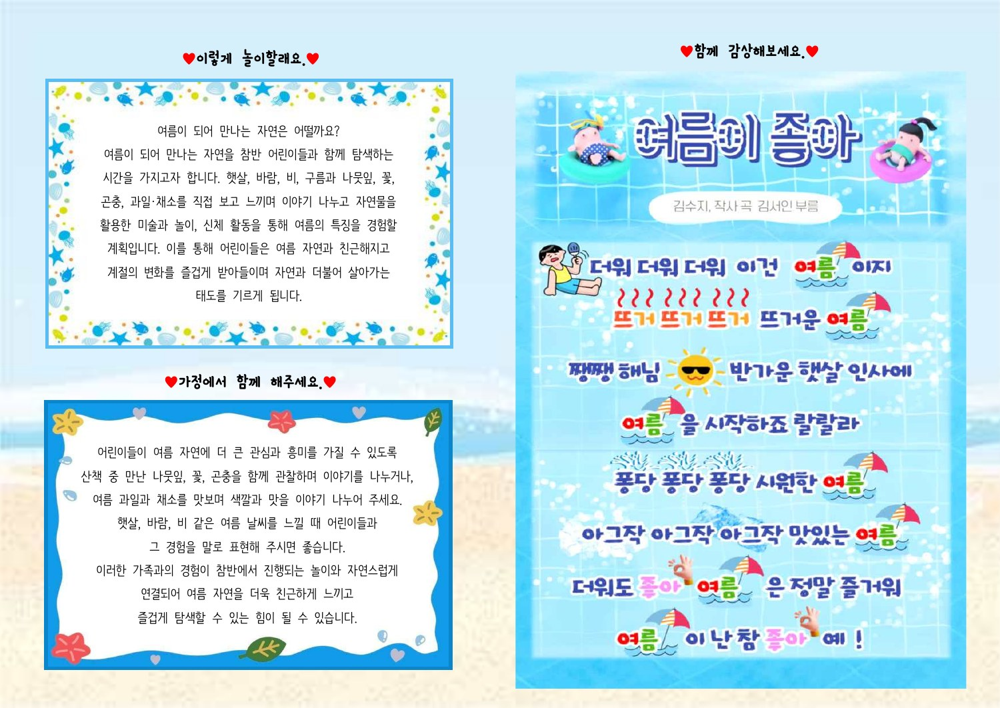
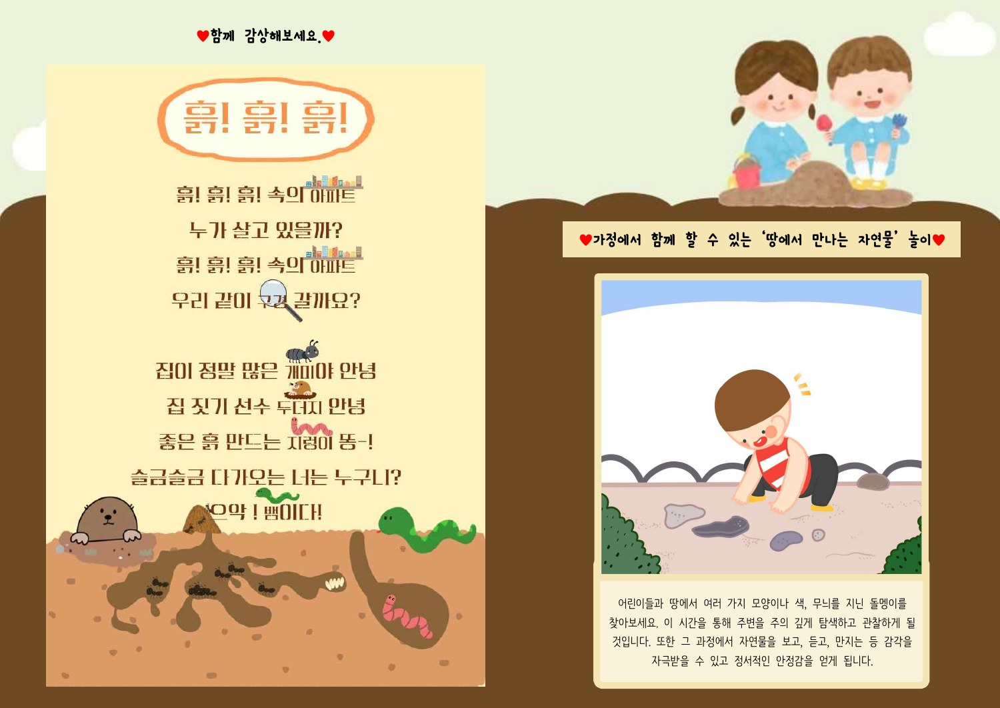
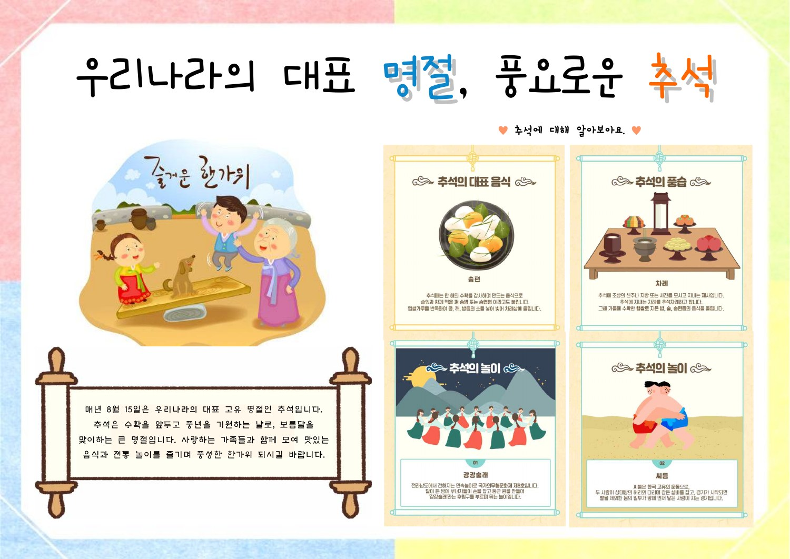
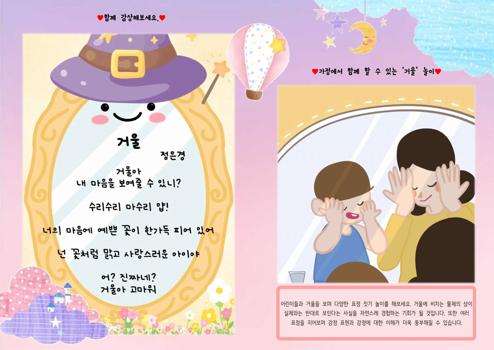
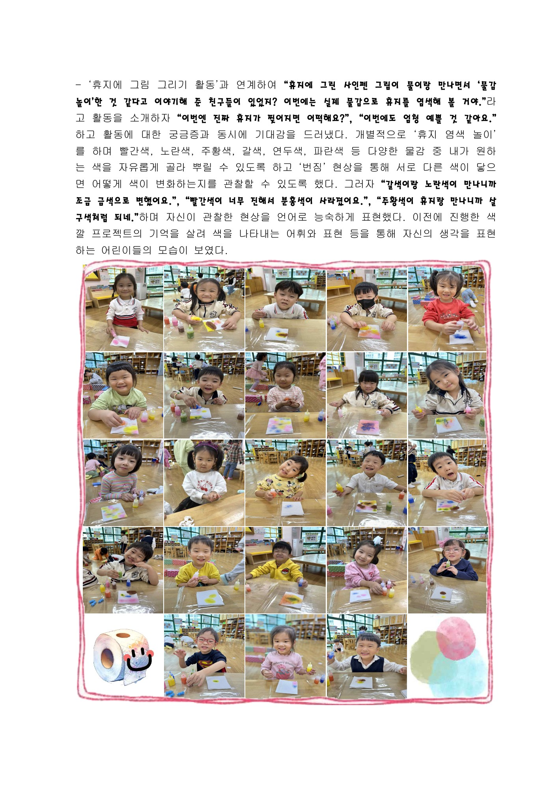

EDUCATION 학력
숭의여자대학교
유아교육과 · 3년 과정
2020.03 — 2023.02
졸업 학점4.16 / 4.5
유아교사 공지민
안녕하세요, 유치원 담임교사 공지민입니다.
아이들의 놀이 속 작은 발견을 살피고,
그 안에 담긴 배움을 소식지로 전합니다.
EDUCATION 학력
유아교육과 · 3년 과정
2020.03 — 2023.02
EXPERIENCE 경력
아이들의 놀이와 일상을 함께하는 교사
2022.03 — 현재 재직 중
QUALIFICATIONS 자격
02 / TEACHING JOURNAL
아이들이 무엇에 관심을 보였는지,
놀이를 통해 무엇을 발견했는지.
직접 제작한 소식지에 그 과정을 담았습니다.

PDF 새 탭에서 보기바다 생물에 대한 관심을 환경을 아끼는 마음으로 연결한 놀이 기록.

PDF 새 탭에서 보기보고, 만지고, 맛보며 만난 여름. 생생한 탐색의 순간을 사진과 글로 정리했습니다.

PDF 새 탭에서 보기익숙한 땅을 새로운 눈으로 바라보고, 자연을 온몸으로 느낀 하루를 담았습니다.

PDF 새 탭에서 보기만들고, 맛보고, 함께 어울리며 경험한 우리 문화의 즐거움을 전합니다.
BEHIND THE PAGES
아이들의 말과 놀이에서
이야기의 시작을 찾습니다.
활동 사진과 관찰한 내용을 엮어
배움의 흐름을 보여줍니다.
집에서도 함께할 수 있는 놀이로
유치원과 가정을 연결합니다.
03 / MONTHLY PLANS
주제에 맞는 그림, 동시, 놀이 이야기로
아이들과 가정이 함께 읽을 수 있는
월간 교육자료를 만들었습니다.

PDF 새 탭에서 보기여름 놀이 이야기와 동요를 담아, 계절의 즐거움을 가정에서도 이어가도록 구성했습니다.

PDF 새 탭에서 보기흙과 돌에 대한 관심을 동시와 가정 연계 놀이로 풀어낸 안내입니다.

PDF 새 탭에서 보기추석의 의미와 전통문화를 그림으로 소개하는 한가위 이야기입니다.

PDF 새 탭에서 보기거울 동시와 표정 놀이를 통해 일상의 호기심을 탐구로 연결합니다.
04 / PLAY PROJECT
태극3반 · 휴지 프로젝트 활동 기록
익숙한 휴지를 관찰하고, 물들이고, 새로운 작품으로 만들어보는 시간. 아이들의 질문이 놀이로 이어지고, 환경을 생각하는 마음으로 확장되는 과정을 기록했습니다.
활동 기록 PDF 보기 (새 탭에서 열기)전체 16페이지 · 미리보기는 11페이지 활동 사진
